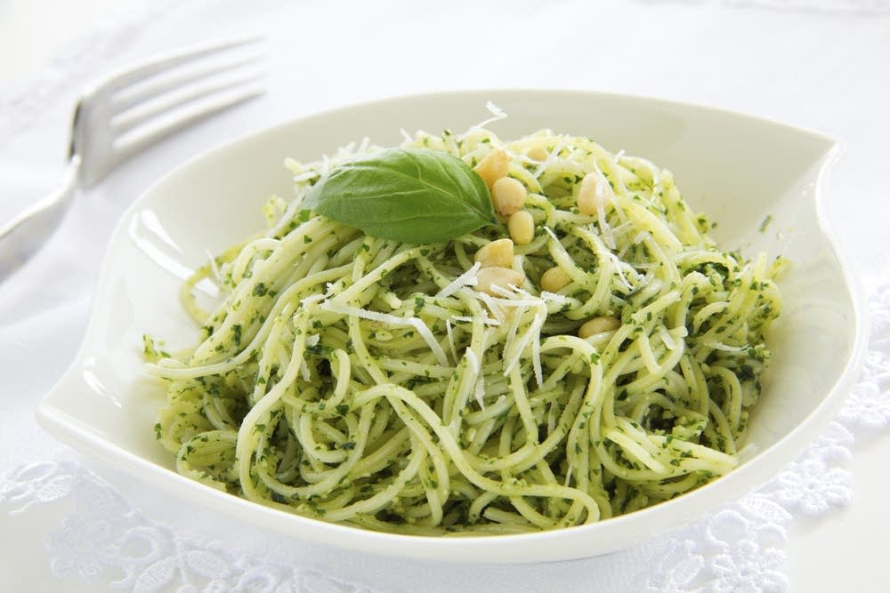

Pesto Pasta

Image Source
Description
This is a recipe for cooked pasta mixed with basil pesto
sauce, which I picked up from YouTuber Adam Ragusea.
Although the preperation for the sauce may require you to go out
of your way for a mortar and pestle, once you
have one, you'll find that pesto sauce is arguably more convenient
to make than tomato pastas. It doesn't require you to use a stovetop
to boil and so is rather quick and easy to make.
I heard once that pesto pasta is the instant ramen of Italy in
that many university students of that country can quickly, easily
and cheaply acquire this dish. Since the only stovetop cooking
that needs to be done is with the pasta, I can imagine that
being the case. This recipe assumes you're making a single
portion, but if you want to say, make it for two people, doubling
the amount for each ingredient works just fine.
For reference, below is a link to that video from Adam Ragusea
Ingredients (for a single portion)
- 1 garlic clove (5g), peeled
- 1 handful (10g) pine nuts (or any other nut)
- 1 handful (10g) grated pecorino or parmesan cheese
- 1 big bunch (25g) fresh basil leaves
- pinch of salt
- pinch of sugar
- good olive oil (I usually use about a glug per serving)
- pasta (1/4 lb, 113g is a generous single portion)
Equipment
- Mortar and Pestle (ideally a set made of stone)
- Sharp knife (i.e. a chef's knife)
- Cheese grater (if you prefer freshly shredded cheese)
- Stovetop pot for cooking the pasta
- Measuing cup (if you want to be precise with ingredients)
- Cutting board
- Wooden Spoon
Steps
- Start boiling pasta in salted water (about a pinch or 2
of salt works well), following the instructions on the pasta
box. Keep an eye on this pasta throughout the steps.
- Chop up the basil (helps with mixing later) and shred
cheese (if needed).
- Use mortar and pestle to grnd garlic, salt and sugar
until liquified.
- Add in chopped basil and shredded cheese, then grind
together.
- Add in olive oil. At this point, it's best to mix with
the wooden spoon for a more saucy consistency.
- Once the pasta is just about ready, drain the water,
but leave a little of the water in the pot. It will further
help with making the pesto more saucy. You can also take even
more of that water with a cup before draining for the next step.
- Stir in the pesto to the pasta in the pot, adding
more starchy water or olive oil to adjust consistency as
desired.